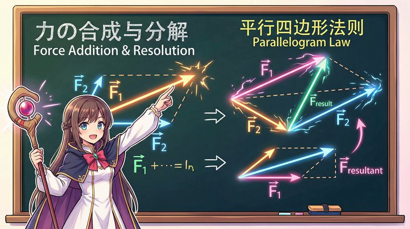

静力学基础
资产配置的力学模型与风险平衡策略
⏱️ 约45分钟
静力学研究物体在力系作用下的平衡条件。在投资理财中，资产配置就是寻找风险与收益的平衡点， 就像静力学中寻找力的平衡一样。理解力的分解与合成，能帮助我们构建更稳健的投资组合。
力的基本概念
力是物体间的相互机械作用，这种作用使物体的运动状态发生改变或使物体产生变形。 力有三要素：大小、方向和作用点。在投资中，风险与收益也可以看作是一种"力"， 它们同样有大小、方向（正负）和作用点（投资标的）。

投资组合的「力的合成」
多个投资标的组合在一起时，整体的风险收益特征可以用力的合成来理解：
- 同向叠加：多个正相关的资产同时上涨，收益叠加，风险也叠加
- 反向抵消：股票和债券通常负相关，一方跌时另一方可能涨，整体波动减小
- 角度合成：不同资产的相关性小于1，组合后的风险小于各资产风险的简单相加
- 最优配置：找到各资产的最佳比例，使组合在给定风险下收益最大
力矩与杠杆原理
力矩是力对物体产生转动效应的度量，等于力的大小乘以力臂。杠杆原理告诉我们， 用较小的力可以撬动较大的重量，关键在于力臂的长度。在金融领域，杠杆投资正是这一原理的应用。
投资杠杆的「力矩效应」
杠杆投资就像使用杠杆撬动重物，能放大收益也能放大风险：
- 杠杆倍数：2倍杠杆意味着用1万元控制2万元的资产，收益和风险都放大2倍
- 保证金交易：期货、融资融券都是杠杆工具，需要维持一定的保证金比例
- 爆仓风险：当亏损超过保证金时，会被强制平仓，就像杠杆失去支点
- 合理使用：杠杆是双刃剑，专业投资者通常控制杠杆在2-3倍以内
平衡条件与资产配置
物体处于平衡状态的条件是：所有力的合力为零，所有力矩的合力矩也为零。 在投资组合中，这意味着各类资产的风险相互抵消，整体组合达到稳定状态。
资产配置的「平衡方程」
构建平衡的投资组合需要满足几个条件：
- 风险平衡：高风险资产与低风险资产的比例要适当，通常股票:债券 = 6:4或5:5
- 再平衡：定期调整资产比例，卖出涨得多的，买入跌得多的，维持目标配置
- 分散投资：不要把鸡蛋放在一个篮子里，至少配置5-8种不同资产
- 动态调整：根据市场环境和个人情况，适时调整资产配置比例